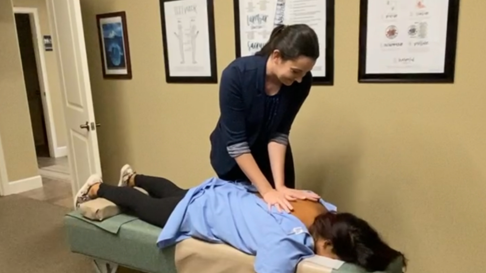

TOP RATED CHIROPRACTOR
OCALA'S #1
ABOUT US
Welcome To Palmetto Chiropractic
Palmetto Chiropractic is a Gonstead practice. That means the time goes into the analysis before anything is adjusted: looking at how you stand and move, reading the spine by hand and by instrument, and taking films where they are needed, so the adjustment is aimed at one joint instead of a region.
It is a slower start and usually a shorter course of care. Most people notice that they are adjusted less here than they expect, and that what does get adjusted is the thing that was actually wrong.

A NEW Experience
Chiropractic Care And The Services That Support It
We help patients recover, move better, and stay well through chiropractic care and the hands-on services that support it.


OUR SERVICES
What Can Ocala's Chiropractic Team Help You With?

Our first priority is understanding where you are, then helping you get out of pain. From there, the aim is to help you recover, move better, and stay well, whether you are dealing with musculoskeletal pain, a sports or work injury, or focused on your overall health and movement.
The care here is Gonstead chiropractic, aimed at finding the root cause of your discomfort and addressing it through hands-on, natural technique rather than through medication.
Chiropractic Care May Help These Common Symptoms

BACK PAIN

NECK PAIN
NECK PAIN
The desk, the phone, and the pillow you actually use matter more than most advice admits.
LEARN MORE
HEADACHES

SCIATICA
SCIATICA
Sciatica is a symptom, and the useful question is where the nerve is being irritated.
LEARN MORE
DISC INJURY

WELLNESS
WELLNESS
Feeling good is more than not being in pain. Regular chiropractic care helps you keep moving well and stay ahead of the next problem.
LEARN MOREOUR REVIEWS
What People Say About Palmetto Chiropractic
FUN FACTS
Things you might not know about Chiropractic
Chiropractic training is rigorous. After undergraduate study, a chiropractor completes years of doctoral education and clinical training before earning a license. Gentle, precise adjustments are the core of the work, aimed at restoring alignment so nerves and muscles can function the way they should. If you would like to schedule a new patient visit, call our office at (352) 554-2545.
CHIROPRACTIC FAQS
Answers to some of the most common questions we hear from patients.
We start by listening. Expect a conversation about your history and goals, a hands-on exam, and a clear explanation of what we found and the options that fit, before anything else.
No. You can book directly with our office; a referral from another provider is not required to be seen.
Chiropractic care is widely used and well established. We tailor every plan to your body and history, and we will always explain what we are doing and why.
It depends on what is going on and how your body responds. After your first exam we will walk you through a plan and check in as you go, rather than committing you to a fixed number up front.
Coverage varies by plan. Our front desk is happy to help you check your benefits before your first visit, so there are no surprises.
Everyday aches from desks and phones, back and neck pain, headaches, sciatica, and the strains that come with sport, work, and pregnancy. If you are not sure whether we can help, call and ask.
Most people feel relief, not pain. We match the technique and the pressure to your body, and we check in with you throughout.
Either. Some people come in for a single problem and move on; others build regular care into their routine. We will be honest about what we think you need.
It varies by person and problem. Some feel a change quickly, others need a little time. We will keep you posted on what to expect as we go.
Just yourself and any relevant history, such as past imaging or a note from another provider if you have one. Our front desk will handle the rest.
OUR EXPERTISE
Why Choose a Chiropractor in Ocala?

-
Choosing a Ocala chiropractor means a natural, hands-on approach to your health. By supporting your body's own ability to heal, chiropractic care helps you take an active role in feeling better, focused on the root cause rather than only the symptoms.
-
Palmetto Chiropractic shapes care around your specific needs. Whether it is back pain, neck pain, headaches, or a wellness goal, your plan is built around what is actually going on.
-
Dr. Raquel Heisse uses the Gonstead method: a specific, hands-on adjustment to the joint the analysis points at, so the rest of your spine is left alone.